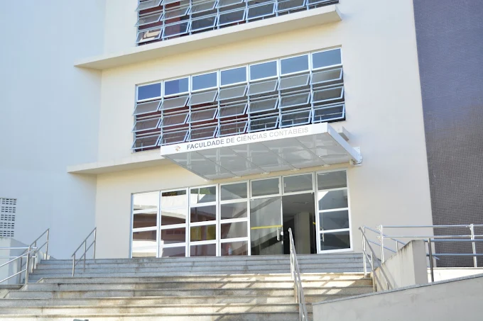

Diretório Acadêmico de Ciências Contábeis da UFBA
Reunimos tudo, em um só lugar
Trilhas de estudo, grade curricular interativa, portal de recursos, gestões e avisos da faculdade.
ConcluídaDisponívelBloqueada
Pré-requisitoDestranca